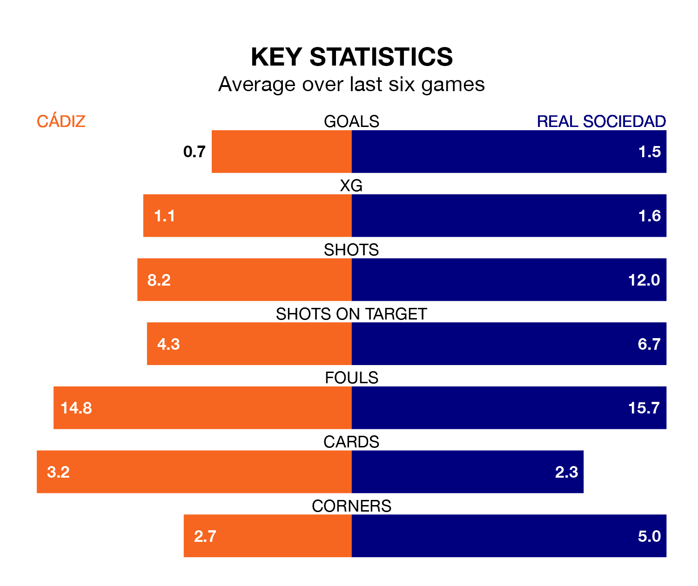

Real Sociedad are strong favourites to take all three points despite Cádiz's home advantage in Thursday's late match at the Estadio Nuevo Mirandilla.
*Betting Company* are offering odds of 1.81 on La Real sealing the win, with the visitors sitting sixth in La Liga table.
Cádiz, who are 16th in the league and 16 points behind Real Sociedad, are priced at 4.05 to win. A draw is set at 3.3.
With 14 goals in 17 games so far this season, Cádiz are the league's joint-third-lowest scorers with 0.8 goals per game. And they are conceding more than average, letting in 24 goals at a rate of 1.4 per game.
La Real, meanwhile, are above average scorers, with 1.7 goals per game, compared to a league average of 1.3. They have conceded 1.1 goals per game.
In the last 10 years, Cádiz and La Real have played each other on six occasions. La Real won five of them and they drew once.
On average, Cádiz scored 0.2 goals and Real Sociedad 1.8 in those matches.
Their last meeting was on March 3, when they played out a 0-0 draw.
Real Sociedad's Diego Rico is the league's most creative player, racking up five assists in 12 appearances so far this season.
For the hosts, Iván Alejo, Roger Martí and Gonzalo Escalante have set up the most goals, having laid on two assists apiece to date.
Cádiz are in bad form in La Liga, with no wins and four draws from their last six games.
With three wins and two draws over that period, the away team's form is much better – they have taken 11 points from 18, compared to Cádiz's four.
Cádiz's last match was on Sunday, a 1-1 draw against UD Las Palmas, with Chris Ramos getting the goal for Cádiz.
La Real drew 0-0 with Real Betis last time out, also on Sunday.
